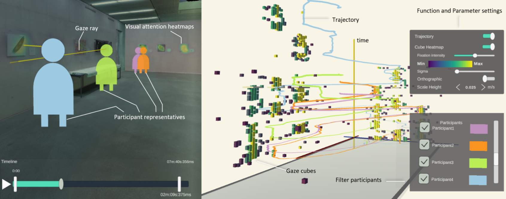

Been There, Seen That: Visualization of Movement and 3D Eye Tracking Data from Real-World Environments | HCI Stuttgart

Authors. Nelusa Pathmanathan, Seyda Öney, Michael Becher, Michael Sedlmair, Daniel Weiskopf, Kuno Kurzhals
Venue. EuroVis (2023)
Abstract. The distribution of visual attention can be evaluated using eye tracking, providing valuable insights into usability issues and interaction patterns. However, when used in real, augmented, and collaborative environments, new challenges arise that go beyond desktop scenarios and purely virtual environments. Toward addressing these challenges, we present a visualization technique that provides complementary views on the movement and eye tracking data recorded from multiple people in realworld environments. Our method is based on a space-time cube visualization and a linked 3D replay of recorded data. We showcase our approach with an experiment that examines how people investigate an artwork collection. The visualization provides insights into how people moved and inspected individual pictures in their spatial context over time. In contrast to existing methods, this analysis is possible for multiple participants without extensive annotation of areas of interest. Our technique was evaluated with a think-aloud experiment to investigate analysis strategies and an interview with domain experts to examine the applicability in other research fields.